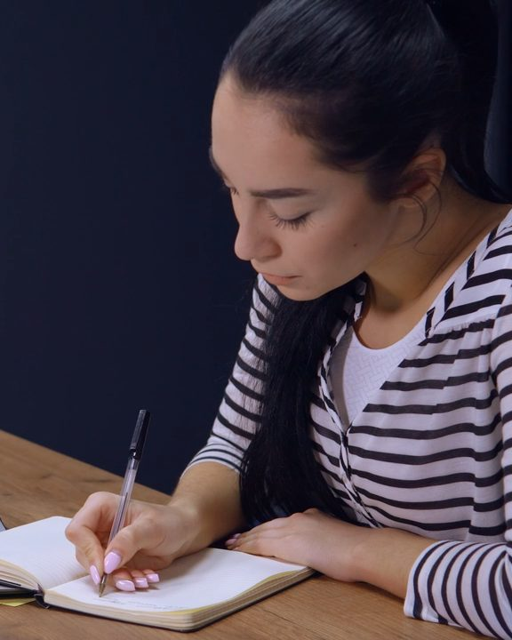

20·30대 1:1 라이프코칭 · 청주(예시)
나를 설명하는 말을 처음부터 다시 씁니다
정답을 대신 골라 드리지 않습니다. 질문하고, 적고, 다시 묻는 12주(예시) 동안 흔들리지 않을 나만의 기준을 함께 세웁니다.
첫 상담 신청하기흔들리는 20·30대가 자기 언어로 기준을 세우도록 돕는 1:1 라이프코칭입니다. 정답을 건네지 않고, 스스로 고를 수 있을 때까지 함께 묻습니다.
12주 과정 보기요즘, 이런 밤이
잦다면
해당하는 곳에 표시해 보세요. 하나면 시작하기에 충분합니다.
네 갈래로
나를 들여다봅니다
진로, 관계, 자기계발을 따로 떼어 보지 않습니다. 서로 연결된 하나의 삶으로 보고, 네 방향에서 차례로 살핍니다.
-
자기이해
내가 어떤 사람인지 설명할 말을 찾습니다. 성향과 감정, 반복되는 선택을 함께 정리합니다.
-

가치관
남의 기대와 내 기준을 나눠 봅니다. 지킬 것과 내려놓을 것의 순서를 세웁니다.
-
관계
나를 지치게 하는 관계의 패턴을 살핍니다. 거리 두기, 부탁과 거절, 감정 표현을 연습합니다.
-
진로와 성장
흥미와 강점, 가치를 진로에 잇습니다. 짧은 목표와 긴 목표로 나눠 실제로 움직일 계획을 짭니다.
막막함이
나만의 기준이 되기까지
-
흩어진 생각
무엇이 문제인지도, 어디서부터인지도 모르는 상태에서 시작해도 괜찮습니다. 처음엔 누구나 생각이 흩어져 있습니다.
-
나를 설명하는 말 찾기
성향과 감정, 반복되는 선택을 함께 정리해 흩어진 생각을 한 문장으로 모읍니다.
-
그 말로 골라 보기
세운 기준으로 관계와 일의 선택을 직접 내려 보고, 어긋나는 지점을 함께 다듬습니다.
-
혼자서도 이어 가기
코칭이 끝난 뒤에도 스스로 묻고 고를 수 있도록, 나만의 방식으로 굳힙니다.
- 1개월
- 2개월
- 3개월(예시)
한 사람에게,
충분히 오래
한두 번의 대화로는 새 기준이 생활에 붙지 않습니다. 짧은 위로 대신 긴 호흡으로 함께합니다.
-
최소 코칭 기간
12주(예시)
-
한 주의 만남
3회(예시)
-
전체 만남
36번(예시)
-
처음부터 끝까지
1:1
한 번의 만남은
이렇게 흘러갑니다
매번 같은 흐름으로 만나기 때문에, 무엇을 이야기할지 미리 정리해 오지 않아도 됩니다.
- 1
체크인
지난 만남 뒤로 달라진 것과 해 본 숙제를 함께 봅니다.
- 2
깊은 대화
그날 가장 무거운 주제 하나를 질문으로 풀어 갑니다.
- 3
정리와 숙제
오늘 찾은 말을 한 줄로 적고, 다음 만남까지 해 볼 일을 정합니다.
프로그램
- 기본
- 12주. 자기이해와 가치관을 중심으로 나만의 기준을 세웁니다.(예시)
- 비용은 상담 때 안내
- 심화
- 기본 과정 뒤 12주. 관계와 진로로 넓혀 실제 선택에 적용합니다.(예시)
- 비용은 상담 때 안내
- 멤버십
- 과정을 마친 뒤 한 달에 한 번, 세운 기준이 잘 지켜지는지 함께 점검합니다.(예시)
- 비용은 상담 때 안내
코칭과 상담은 다릅니다
- 상담
- 마음의 상처를 돌보고 회복하는 데 집중합니다.
- 코칭
- 지금과 앞으로의 선택, 그리고 행동을 바꾸는 데 집중합니다.
상담이 먼저 필요해 보이면 연계된 전문 상담기관을(예시) 안내해 드립니다.
함께할 코치
“답을 아는 사람보다, 끝까지 함께 묻는 사람이고 싶습니다.”(예시)
— 한서윤(예시) 코치
처음 만남부터 마지막 만남까지 한 코치가 맡습니다.(예시) 지난 이야기를 다시 설명하지 않아도 되도록, 만남마다 나눈 말을 기록으로 이어 갑니다.
- 자격
- 확정 후 기입
- 경력
- 확정 후 기입
- 코칭 분야
- 청년 자기이해 · 관계 · 진로
자주 묻는
질문
읽은 질문에는 주황 점이 남습니다.
코칭은 상담과 무엇이 다른가요?
상담은 지난 상처를 돌보고 마음을 회복하는 데, 코칭은 지금과 앞으로의 선택과 행동을 바꾸는 데 무게를 둡니다. 이야기를 나누다 상담이 먼저 필요하다고 판단되면 솔직하게 말씀드리고 상담기관을 안내합니다.
어떤 사람에게 잘 맞나요?
겉으로는 잘 지내는데 '이게 정말 내 선택인가' 하는 물음이 자주 드는 분, 진로와 관계와 자기계발 사이에서 무엇부터 해야 할지 모르는 분께 잘 맞습니다. 당장 답을 듣고 싶은 분보다 직접 답을 찾고 싶은 분께 더 맞습니다.
진로 고민도 다룰 수 있나요?
네. 진로를 직업 하나 고르는 일이 아니라 어떻게 살고 싶은지와 이어진 문제로 봅니다. 흥미, 강점, 가치, 생활 리듬을 함께 점검하고 현실적인 선택지를 좁힌 뒤 단계별 계획을 세웁니다.
관계가 너무 어려운데 도움이 될까요?
반복되는 갈등을 감정, 생각, 행동으로 나눠 살펴봅니다. 편안한 거리, 부탁하고 거절하는 말, 감정을 표현하는 방법을 실제 장면으로 연습합니다. 목표는 '좋은 사람'이 아니라 '나답게 관계 맺는 사람'입니다.
왜 최소 3개월인가요?
새로 세운 기준은 실제 선택 앞에서 몇 번 써 봐야 내 것이 됩니다. 처음 한 달은 나를 설명하는 말을 찾고, 다음 한 달은 그 말로 골라 보고, 마지막 한 달은 혼자서도 이어 갈 수 있게 다듬습니다. 기간과 횟수는 상담 때 함께 조정합니다.(예시)
온라인으로도 할 수 있나요?
기본은 센터에서 마주 앉아 진행합니다. 일정상 어려운 주에는 화상으로 바꿀 수 있습니다.(예시)
처음엔 무엇을 준비하면 되나요?
요즘 가장 자주 떠오르는 고민 한 가지면 충분합니다. 신청 뒤 짧은 사전 질문지를 보내 드리니, 잘 쓰려 하지 말고 떠오르는 대로 적어 주세요.
고민 한 가지면
충분합니다
정리된 말이 없어도 괜찮습니다. 남겨 주시면 영업일 기준 하루 안에(예시) 연락드립니다.
- 주소
- 충북 청주시 흥덕구 (상세 주소)(예시)
- 상담 시간
- 평일 13:00–21:00
토 10:00–16:00(예시)